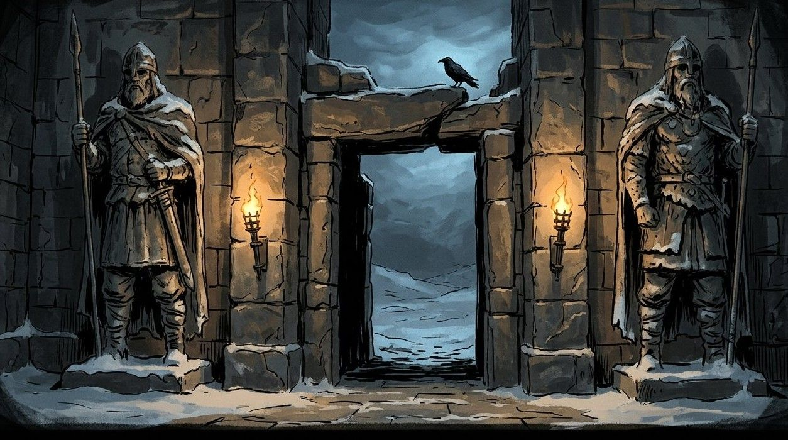

Error 404
A gate that leads nowhere
This gate opens onto nothing. It happens — the north is badly mapped. Try the ones that do lead somewhere.


This gate opens onto nothing. It happens — the north is badly mapped. Try the ones that do lead somewhere.